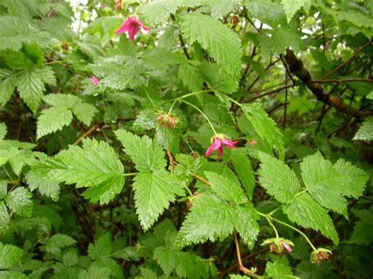
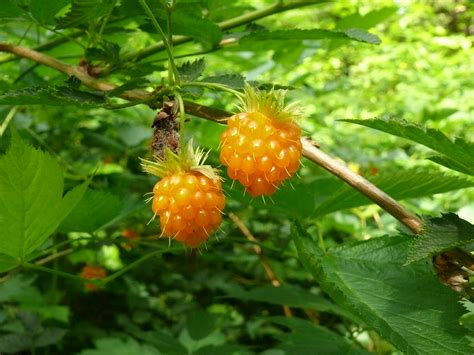

Salmonberry (Rubus spectabilis)
Fruit: yetwán, Bush: yetwánay̓


Planting
Salmonberry is a shrub that grows well in moist, shaded areas. Here's how to plant salmonberry:
- Choose a location with partial shade or dappled sunlight.
- Prepare the soil by removing weeds and loosening it.
- Dig a hole slightly larger than the root ball and place the plant in the hole.
- Backfill the hole with soil and gently firm it around the plant.
- Water the plant thoroughly after planting and keep the soil consistently moist.
Usage
Salmonberry has cultural and culinary uses:
- The berries of salmonberry are edible and can be eaten fresh or used in jams and desserts.
- The plant has cultural significance and is used in traditional Indigenous ceremonies.
- Salmonberry provides habitat and food for wildlife, including birds and small mammals.
Environmental Impact
Salmonberry contributes to the ecosystem in the following ways:
- The shrub provides cover and nesting sites for birds.
- Salmonberry helps stabilize soil and prevent erosion in riparian areas.
- The plant supports pollinators and contributes to the overall biodiversity of the habitat.